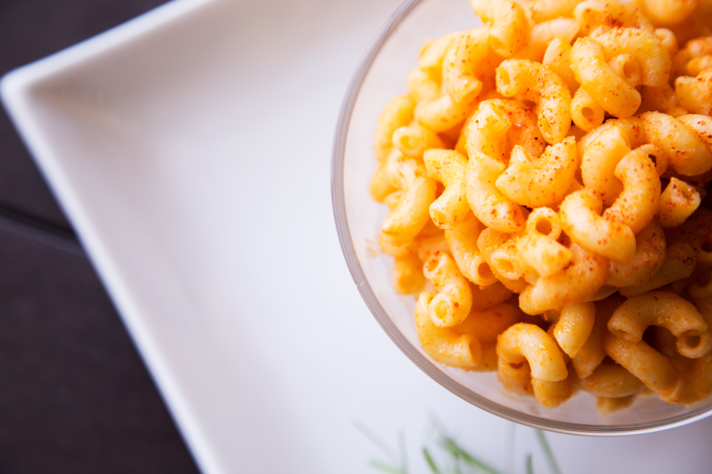

Mac & Cheese

Indulge in the ultimate comfort food experience with our mouthwatering recipe for creamy and irresistible mac and cheese.
This classic dish combines perfectly cooked elbow macaroni with a velvety, homemade cheese sauce that's both rich and cheesy.
Each tender pasta bite is generously coated in a blend of cheddar, mozzarella, and Parmesan cheeses, resulting in a gooey, bubbling masterpiece that's a true crowd-pleaser.
Whether you're serving it as a comforting weeknight dinner or bringing it to a potluck, this mac and cheese recipe is guaranteed to satisfy your craving for cheesy, comforting goodness.
Prepare to savor the nostalgic flavors of childhood with every creamy, cheesy forkful.
Ingrediends
- 8 ounces (about 2 cups) elbow macaroni or any pasta shape of your choice
- 2 teaspoon salt (for boiling water)
- 2 cups shredded cheddar cheese (sharp cheddar works great)
- 1/2 cup shredded mozzarella cheese
- 2 1/2 cups whole milk
- 1/4 cup unsalted butter
- 1/4 cup all-purpose flour
Steps
- Cook the pasta according to the package instruction
- Drain the cooked pasta and set it aside.
- In a medium saucepan, melt the butter over medium heat.
- Once the butter is melted, add the flour and whisk continuously to create a smooth paste (roux). Cook for about 1-2 minutes, but be careful not to let it brown.
- Gradually pour in the milk while whisking constantly to avoid lumps. Continue to cook and whisk until the mixture thickens, usually about 5-7 minutes.
- Reduce the heat to low, then add the cheeses to the sauce. Stir until the cheeses are fully melted and the sauce is smooth.
- Season the sauce with salt, black pepper, and paprika (if using). Adjust the seasoning to your taste.
- Add the drained pasta to the cheese sauce and gently stir to coat the pasta evenly with the creamy sauce.